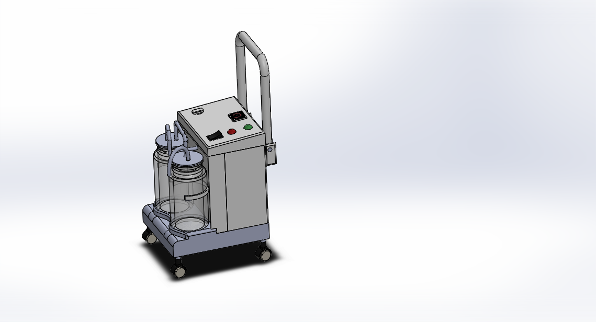
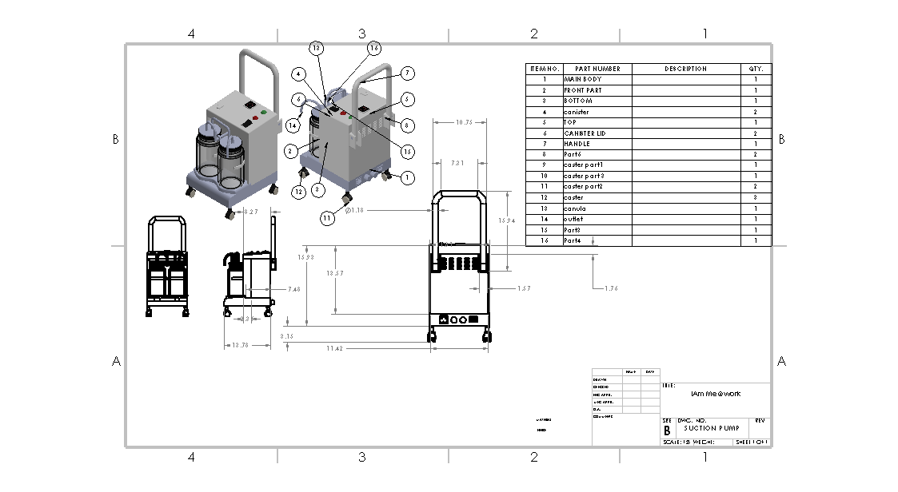
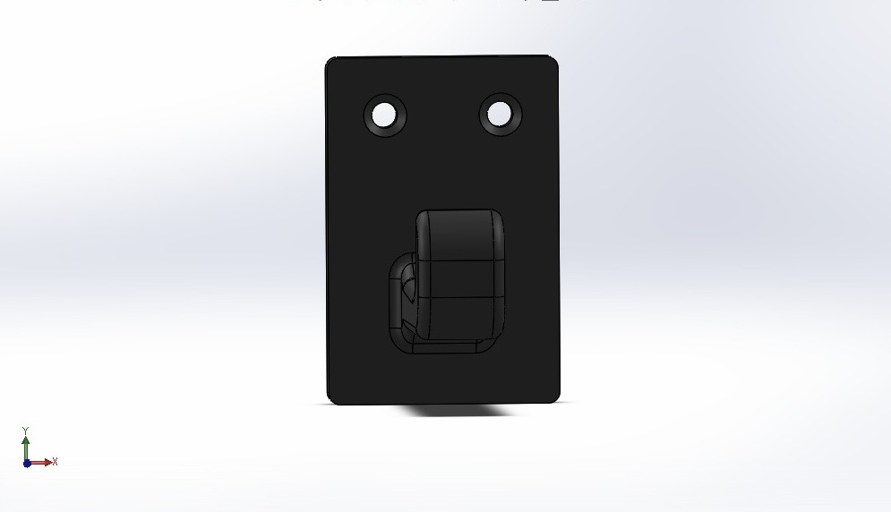
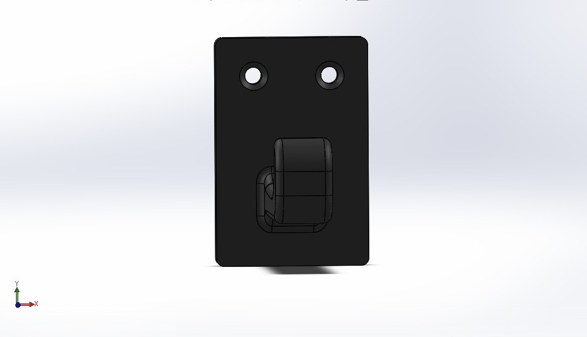

Biomedical CAD Gallery
Professional SolidWorks modeling and technical documentation.
Assembly Design
Mobile Medical Suction Machine
SolidWorks
Replica of a clinically functional hospital device designed for high structural integrity and stability.
- Dual 2–3L collection jars with overflow protection.
- Oil-less diaphragm vacuum pump enclosure.
- Reinforced base with locking caster wheels.


Additive Manufacturing
Wall-Mounted Probe Holder
PETG Optimization
Optimized for 3D printing to securely hold laboratory probe cables and prevent insulation damage.
- 5mm fillets at base junctions to reduce stress.
- Countersunk holes for flush mounting.
- 1mm rounded edges for cable protection.


 

Precision Component
Centrifuge Tube Adapter
SolidWorks
Designed for precision fit stabilization of 5mL tubes in large centrifuge buckets.
- Calculated clearance fit for easy insertion.
- 22mm top lip for mechanical stop.
- Stress-reducing 8.5mm fillets for balance.